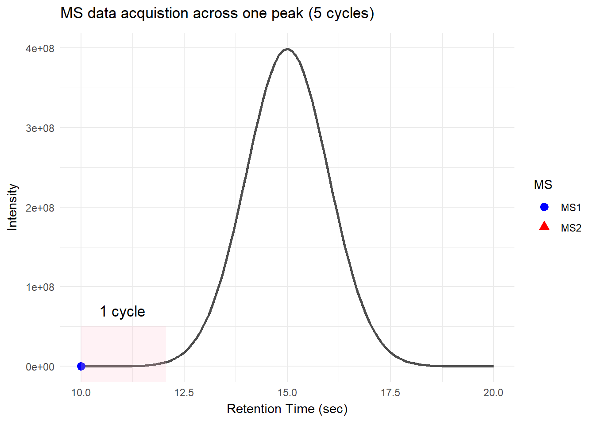
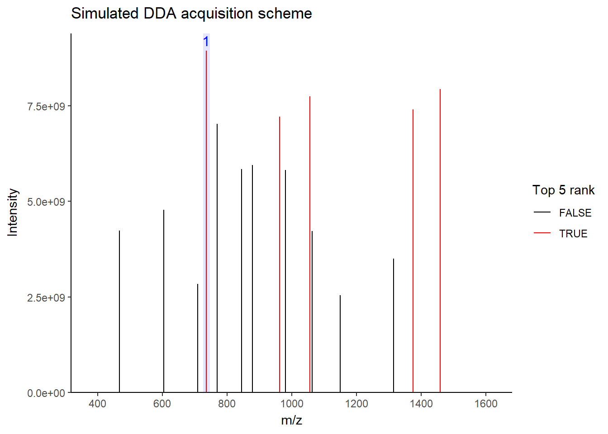
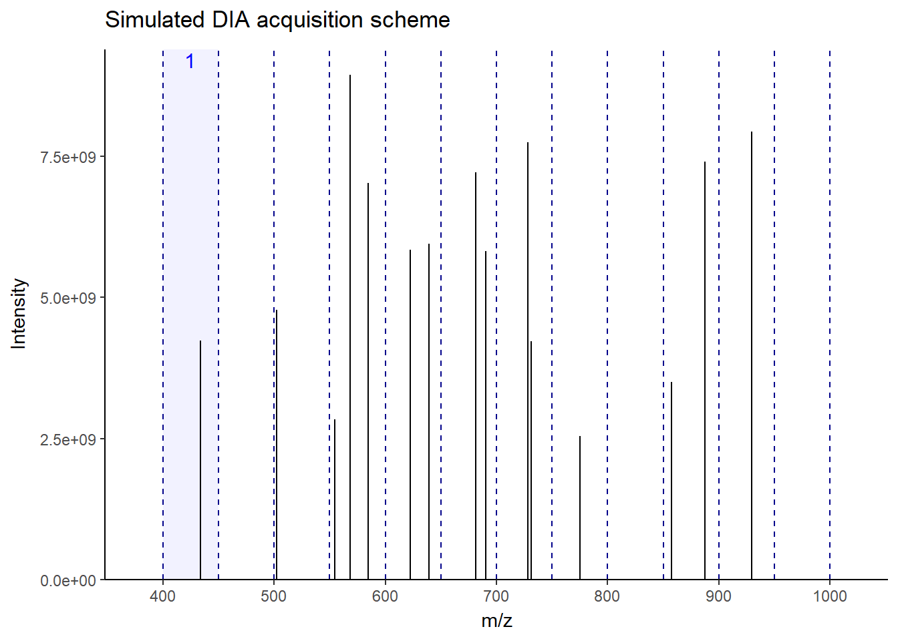

flowchart LR A[Ion Source] --- B(Mass Analyzer 1) B --- C[Collision Chamber] C --- D(Mass Analyzer 2) D --- E[Detector]
If you have ever worked with untargeted proteomic results, you would likely encounter the terms data-dependent acquisition (DDA) and data-independent acquisition (DIA). Although these two acquisition schemes finally produced (generally) two-dimensional data matrices of peptides (or proteins) and intensities, they relied on fundamentally distinct mechanisms for acquiring the data. To understand how different these two approaches are, we first have to understand the fundamentals of how mass spectrometry captures and analyzes peptide signals.
Mass spectrometry data acquisition
After peptides are injected into the mass spectrometry and ionized by the ion source, the resulting ion travels to the mass analyzers. The function of mass analyzers is to separate ionized peptides based on their m/z. For those who are confused about what m/z is, think of it this way: mass analyzers use magnetic or electric fields to separate ions, but they cannot directly measure peptide mass. Instead, they rely on the ion’s mass-to-charge ratio (m/z), where the charge helps distinguish between ions. For instance, a peptide with a mass of 1200 and a 2+ charge will appear as 600 m/z in the analyzer.
In untargeted proteomic analysis, commonly used mass analyzers usually involve two (or even three) mass analyzers with different functions, with collision chamber for further ion fragmentation. This setup is known as tandem mass spectrometry (MS/MS).
In general, mass analyzer in MS/MS setup include:
Quadrupole: This mass analyzer functions as the first m/z (mass-to-charge) filter, so we can define the range of the m/z that interests us most.
Time-of-flight or Orbitrap: These are high-resolution mass analyzers. Although they have different principles of mass separation, they both share the same goal: to distinguish even minuscule m/z differences between ions with very high precision.
So, basically, data acquisition of peptide ions starts with a quadrupole to filter the m/z that we are interested in. In the case of peptides, these numbers usually range around 400-1800. Then, the filter ions are passed into the high-resolution mass analyzer, which separates the ions in finer detail. Thereafter, all separated ion data are recorded by the detector, which is then processed into the spectrum we see in the software.
flowchart LR A[Ion Source] --> B(Quadrupole) B --- C[Collision Chamber] C --- D(Time-of-flight/Orbitrap) D --> E[Detector] B -.-> D linkStyle 0,3,4 stroke:darkred,stroke-width:2px
What I recently described is basically MS1 acquisition (or full scan/precursor scan). Note that collision chamber is not used here since there is no fragmentation occurs; it will be involved in MS2.
Then what about MS2?
Well, what we obtain from MS1 is a list of m/z values of all ions present at the moment. This is called peptide fingerprints. However, this data is not enough to figure out what these peptides really are, because some peptides have the same m/z even though their sequences are different. This is why we need MS2, where we break down these ions into smaller pieces via a collision chamber to analyze their patterns further.
flowchart LR A[Ion Source] --> B(Quadrupole) B --> C["Collision Chamber (Fragmentation)"] C --> D(Time-of-flight/Orbitrap) D --> E[Detector] linkStyle 0,1,2,3 stroke:darkred,stroke-width:2px
This is where the difference between DDA and DIA acquisition kicks in, because these two approaches have clearly distinct patterns to obtain MS2.
Data-dependent acquisition
There is a specific time window during which peptides with the same or similar properties elute together as a single peak. This allows mass spectrometry to collect multiple data points as the peak elutes. Mass spectrometry collects multiple rounds of data in one peak. Each round of the scans consists of one MS1 and multiple MS2 scans; this is called a cycle, and the time it takes to complete a cycle is called cycle time.

For DDA, in one cycle, the top N most intense data in MS1 (aka precursor ions) will be further fragmented into MS2 (daughter ions). Take a look at the picture below, the 5 most intense spectra in this MS1 are then individually fragmented and analyzed in separate MS2 scans sequentially (not simultaneously!), resulting in 5 following MS2 (red triangle in the above picture). This is why it is called “data-dependent”–it depends on the MS1 data. It is a classic data acquisition scheme that has been used since the beginning of the shotgun proteomic era.

Well, this is a solid method for identifying peptides. Still, there’s a catch: the fragmentation tends to favor more abundant precursor ions. In other words, more abundant peptides are more likely to get selected for fragmentation, while less abundant peptides may get overlooked. Therefore, when you see quite a lot of missing data in your final data matrix, there is a good chance it was acquired by DDA. To compensate for this bias, most instruments use a feature called dynamic exclusion that prevents repeated fragmentation of the same precursors within a short time window. But that’s getting a little bit too technical–we’ll talk about it in a future post.
Data-independent acquisition
As I stated, DDA has a limitation that it is bias towards more abundant precursors. So why don’t we just fragment it all? Well, this is exactly the concept behind DIA. It works by sequentially fragmenting all ions within the defined mass windows.

As you can see in the figure, for this MS1, the next 12 windows will be sequentially fragmented in MS2. In this way, all ions–more or less–get a chance to be fragmented without bias. This makes the fragmentation pattern much more predictable, resulting in more robust, reproducible spectra generation across the run. Accordingly, there will be a lot less missing data events than DDA, especially in low-abundant peptides. There is a lot of variation in window fragmentation patterns, such as staggered windows and variable-width windows that are designed to optimize coverage and improve sensitivity, depending on the instruments.
Terrific! So, should we entirely abandon DDA and move to DDA? Not exactly, for now. While it results in much more reproducible spectra, the spectra themselves are much more complicated. This is because there are multiple precursors fragmented together within one window, leading to chimeric spectra. DDA typically isolates and fragments individual precursors within narrow windows, making chimeric events much less likely. Therefore, identifying peptides from these spectra often requires library–a pre-built reference of known peptide fragmentation pattern–to serve as a spectrum blueprint to match spectra with overlapping fragmented ions.
Luckily, the bioinformatics tools for DIA are rapidly evolving, making it very feasible to analyze these spectra with ease. Most modern proteomics tools now support analyzing DIA without requiring much effort from the users. Some tools can even do it with library-free settings, such as DIA-NN, MaxQuant, Spectronaut, MSFragger, and many more. Note that proper methods for false discovery estimation in DIA are still in debate. Still, in a general label-free workflow, DIA is now a highly accessible and powerful option at the moment.
So, DDA still has the place?
Absolutely. While currently DIA is the go-to for general label-free workflow, certain methods still prefer DDA, such as:
Post-translational modification analysis, DDA provides much cleaner MS2 spectra, which are critical for confident PTM modification site localization. (Though DIA is rapidly catching up in this area.)
Label-based proteomics, especially with tandem mass tag.
Building a tailored spectral library for some projects.
Peptidomics, your regular computer could explode due to a very large search space.
De novo sequencing, since interpreting chimeric spectra without prior knowledge is still highly challenging.
Conclusion
So, while DIA is rapidly evolving and can replace some DDA workflows, DDA still has a place, especially when you need to do experiments that require much cleaner spectra, such as PTM or de novo sequencing. Choosing the right approach depends on your specific research questions and analytic goals. But who knows what it will be in the future? With continuous improvements in mass spectrometry hardware and software, the line between DDA and DIA will only grow more flexible.